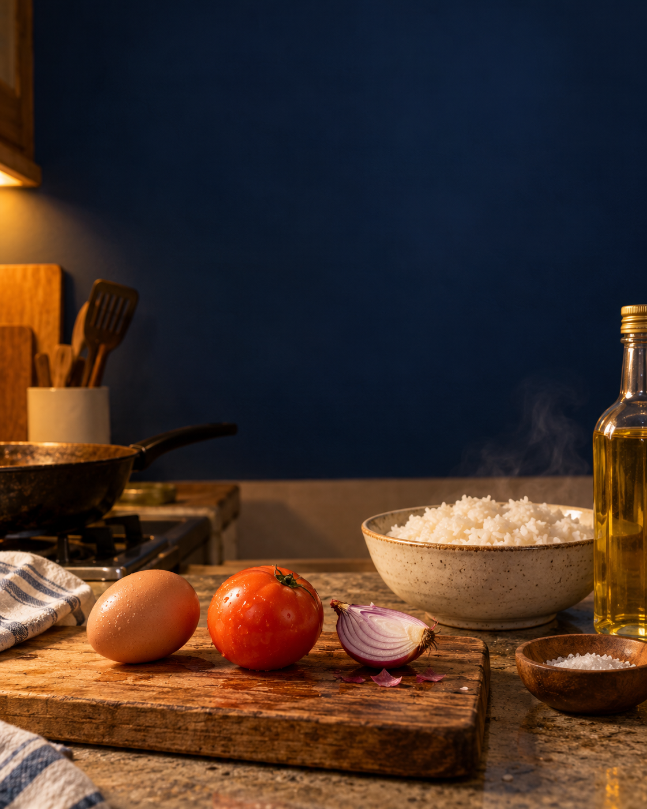
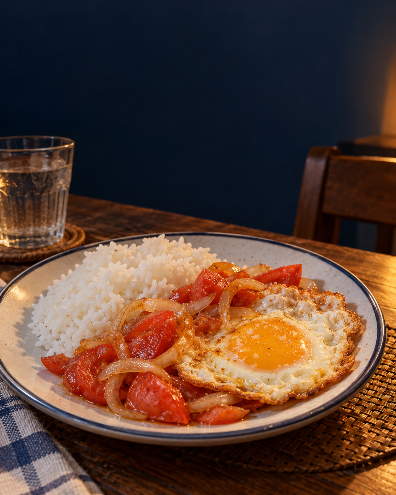

TITO AI TRIES · MONDAY ULAM01 / 05
REF MO:
ITLOG.
KAMATIS.
ANO NA?
Hindi na kailangang mag-scroll ng kung anu-anong recipe.
Isang prompt. Isang lutong-bahay na idea.
TOTOO BA ANG CHALLENGE?02 / 05
WALANG
EXTRA
SANGKAP.
Itlog · kamatis · sibuyas · kanin. Asin, mantika, tubig.
Sabihin sa AI ang meron ka. Sabihin din ang wala.
KOPYAHIN ANG PROMPT SA GEMINI03 / 05
ANG PROMPT
NA MAY LIMIT.
“May itlog, kamatis, sibuyas, at kanin ako. Tubig, kaunting asin at mantika lang ang iba. Magmungkahi ng isang simpleng ulam para sa isang tao. Hakbang sa Taglish. May kailangan pa bang bilhin? Huwag mag-imbento ng sangkap.”
ISANG TOTOONG GEMINI RUN · OCT 1204 / 05
ANG SAGOT?
MAY ULAM.
“Pritong Itlog na may Ginisang Kamatis at Sibuyas”
“Wala na.” — sagot sa kung may bibilhin
Observed in signed-out Gemini Flash-Lite. One run only; results can vary.

AI O AY? · HUMAN CHECK PA RIN05 / 05
HINDI AI
ANG LULUTO.
Idea lang ang binigay. Ikaw ang magche-check ng steps at magluluto.
Comment ULAM kung gusto mo ng next pantry challenge. · Tito AI